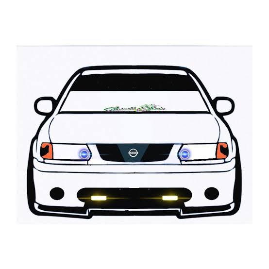

Mi portafolio
Proyectos documentados, bitácoras de mantenimiento, guías de motor GA16DE y catálogos de refacciones para Nissan Tsuru V16, GSR 2000 y GS1.
Registro completo de puesta a punto y refacciones en un Nissan Tsuru V16.

Ajuste de admisión, escape, frenos y detalles del Nissan Tsuru GSR 2000.
